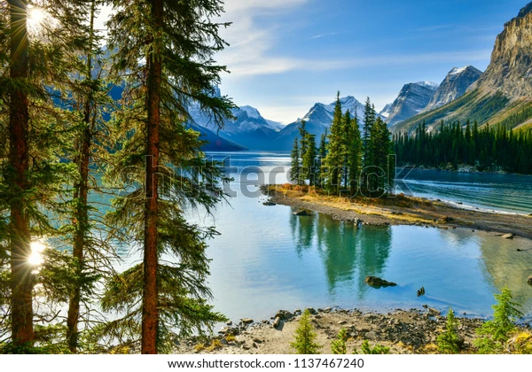
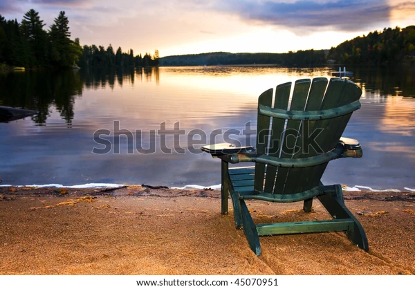
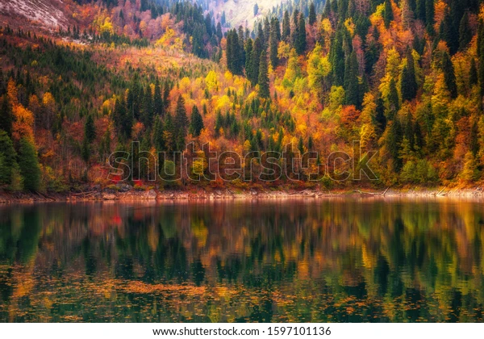
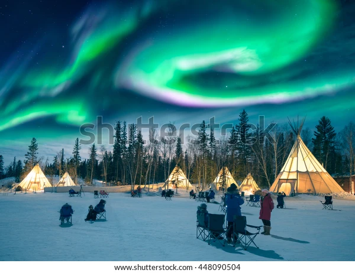
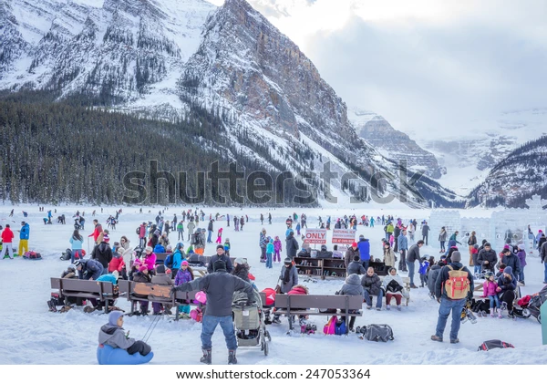
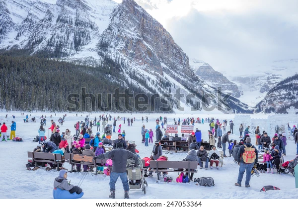

Topic #1
Natural Wonderland
Considered one of the most beautiful countries in the world for the beauty of its nature, Canada admires its endless forests, blue lakes and rivers, breathtaking waterfalls, majestic mountains, natural treasures, and wildlife those who travel here. Surrounded by oceans on three sides, this huge country has a different beauty in every season. This giant country, which has a different beauty in every corner, offers unlimited opportunities and experiences to visitors. If you have already bought your tickets, you must travel Niagara Falls (Ontario) where Canada's most famous place, Banff National Park is located in the heart of the majestic Rocky Mountains in the province of Alberta, Old Quebec city where is a UNESCO World Heritage Site, Whistler ski resort in Vancouver, Polar bears of Churchill in Northern Manitoba, Vancouver Island in British Columbia, Bay of Fundy in New Brunswick and Nova Scotia, Gros Morne National Park in Newfoundland, Yukon and so on. The richness and beauty of Canadian nature cannot be finished by counting.


.webp) 
